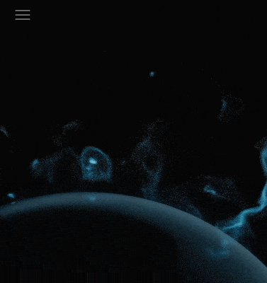
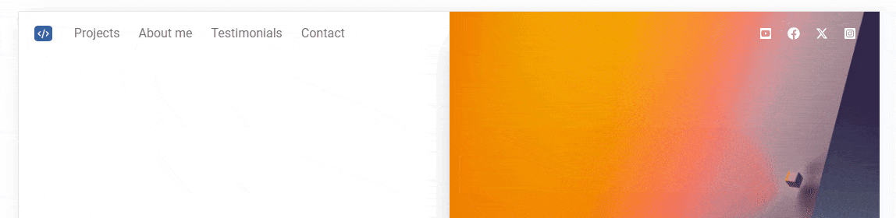
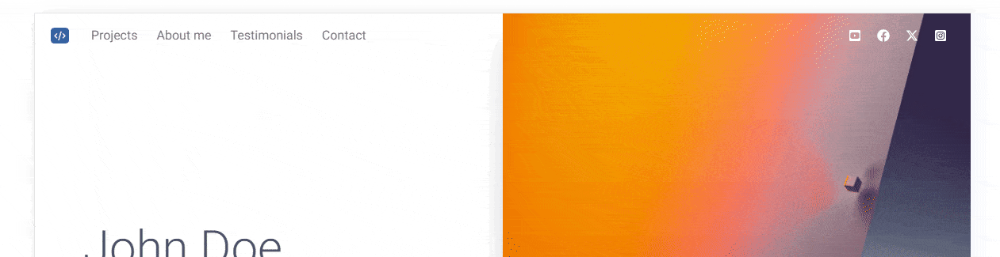

Our navbar and its animation look really good on large screens. However, they require improvements in mobile view.
Collapse
First we need to add Collapse to the JavaScript initialization
so that in the mobile view our navbar can be expanded.
It's simple - just add Collapse to the initialization in the
src/js.index.js file:
Now when you reduce the screen width and click on the hamburger icon, you will be able to expand the navbar in mobile form.
.mobile-only class
To make our navbar work perfectly on both large and small screens, we will need to create a custom Tailwind class.
By default, breakpoints in Tailwind are set from the minimum width - e.g.
breakpoint md means min-width: 768px . This would
be hard to use in our situation, so we need a class that will work for
screens smaller than about 992px.
So open the tailwind.config.cjs file (you will find it in the
root folder of your project) and update it as below, adding the
.mobile-only class to the configuration:
.mobile-only to the navbar
Now let's add white background to the navbar by default but only on mobile (so when our navbar is collapsed).
To do this, we need to add the .mobile-only:bg-white class to
the navbar element:
Now when you reduce the screen width below 992px you will see
that it becomes white.

But we have a new problem - icons disappear. This is because they are white by default, so they are completely invisible on a white background.
Let's fix this in the next step.
We also need to change the color of the icons only in the mobile view. So
let's add a class .mobile-only:text-neutral-500 to each
<a> element inside
<div id="navbar-icons">:
Now when you reduce the screen width you will see that the icons are visible again.
Let's take this opportunity and add additional padding in the mobile view to the div containing the icons. This will make them look better:
We need to make sure that our script adding and removing classes in the
navbar will only work on wide screens. We don't want to risk unexpected bugs
in the mobile view, so let's add a condition that the script should be
executed on screens larger than 992px: